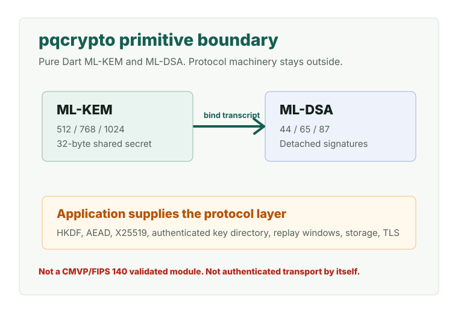

Pure Dart PQC primitives
pqcrypto: Pure Dart Post-Quantum Cryptography
pqcrypto provides NIST-standardized ML-KEM key encapsulation and ML-DSA digital signatures as a pure Dart package with zero runtime dependencies.

Version0.3.1
Runtime deps0
ML-KEM KATs3000
ML-DSA KAT signatures1800
Evidence-scoped cryptography
The package provides algorithm/KAT-conformance and interoperability evidence. It is not a CMVP/FIPS 140 validated cryptographic module.
- FIPS 203-aligned ML-KEM implementation with checked-in KAT evidence.
- OpenSSL interop A-G passes for ML-KEM-512/768/1024.
- FIPS 204-aligned ML-DSA implementation byte-exact on the checked-in KAT corpus.
- Best-effort zeroization in Dart.
Do not overclaim
These terms are deliberately blocked in generated agent files and discovery text.
- FIPS validated
- FIPS 140 validated
- CMVP validated
- certified
- hard constant-time Dart guarantee
- hard memory-erasure guarantee
- ML-KEM is authenticated transport by itself
Algorithm surface
| Algorithm | Standard | API | Public key | Secret key | Ct/Sig | Shared secret |
|---|---|---|---|---|---|---|
| ML-KEM-512 | FIPS 203 | PqcKem.kyber512 | 800 | 1632 | 768 | 32 |
| ML-KEM-768 | FIPS 203 | PqcKem.kyber768 | 1184 | 2400 | 1088 | 32 |
| ML-KEM-1024 | FIPS 203 | PqcKem.kyber1024 | 1568 | 3168 | 1568 | 32 |
| ML-DSA-44 | FIPS 204 | DilithiumParams.mlDsa44 | 1312 | 2560 | 2420 | - |
| ML-DSA-65 | FIPS 204 | DilithiumParams.mlDsa65 | 1952 | 4032 | 3309 | - |
| ML-DSA-87 | FIPS 204 | DilithiumParams.mlDsa87 | 2592 | 4896 | 4627 | - |
Install and start
Use the public API directly; bring your own KDF, AEAD, key storage, and protocol layer.
dart pub add pqcrypto
import 'package:pqcrypto/pqcrypto.dart';
final kem = PqcKem.kyber768;
final (pk, sk) = kem.generateKeyPair();
final (ct, ss1) = kem.encapsulate(pk);
final ss2 = kem.decapsulate(sk, ct);
final params = DilithiumParams.mlDsa65;
final (sigPk, sigSk) = MlDsa.generateKeyPair(params);
final sig = MlDsa.sign(sigSk, message, params, ctx: ctx);
final ok = MlDsa.verify(sigPk, message, sig, params, ctx: ctx);Agent-ready context
The same manifest generates the public AI discovery files and coding-agent rules, so assistants see the same boundaries humans see.
llms.txt
Concise AI-readable project identity and authoritative links.
llms-full.txt
Full AI-readable context with algorithms, docs, and validation commands.
identity.json
Structured software identity, capabilities, and claim boundary.
developer-ai.txt
Coding-agent guidance for implementation and verification.
faq-ai.txt
AI-readable answers to common package and security questions.
ai.txt
Allowed and disallowed AI summarization behavior.
Canonical documentation
README
Overview, install path, quickstart, validation status, and package boundary.
Documentation Index
Canonical map of all maintained project documentation.
ML-KEM Testing
Checked-in ML-KEM KAT corpus, hashes, and release gates.
ML-DSA FIPS 204 Release Guide
ML-DSA implementation, validation, and hardening checklist.
OpenSSL Interop
ML-KEM A-G interoperability harness and evidence.
FIPS 140 Boundary
Precise wording boundary for algorithm evidence versus module validation.
Security Audit
Resolved issues, residual risks, and side-channel posture.
Cookbook
Builder-facing recipes and project ideas for safe composition.
Project Ideas YAML
Machine-readable recipe and idea catalog for code generation agents.
Universal Multi-Agent PQC Framework
Canonical cross-agent framework for Codex, Claude Code, and Antigravity.